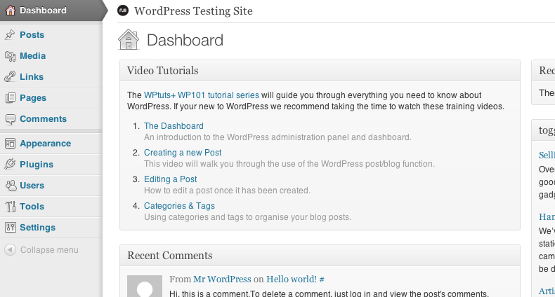
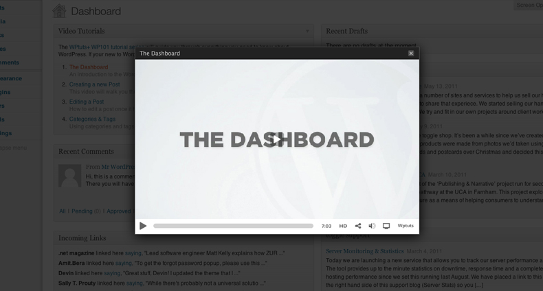
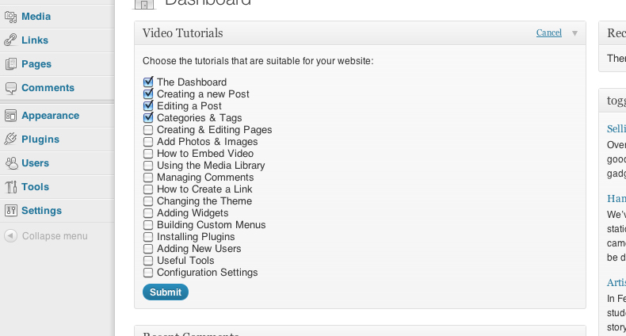

Created: 16/08/2011
By: Scott Evans
Web: scott.ee
Thank you for purchasing this plugin. If you have any questions that are beyond the scope of this help file, please feel free to email via my user page. Thanks again!
A dashboard widget that provides one click access to WordPress video training. The widget can be configured by a WordPress administrator, allowing them to choose the most appropriate videos for the website and client.
The videos are from the WPtuts+ WP101 tutorial series.
To install this plugin:
Visit WordPress.org for a comprehensive guide on this process and more information on plugins.
Once the plugin is activated the widget will appear on your WordPress dashboard.

From here users can choose to watch any video in the list. The videos will pop up over the WordPress Dashboard and can be made full screen if required.

Administrators can edit which videos are available.

Once again, thank you so much for purchasing this plugin. If you have a more general question relating to the plugins on CodeCanyon, you might consider visiting the forums and asking your question in the "Item Discussion" section.
Scott Evans